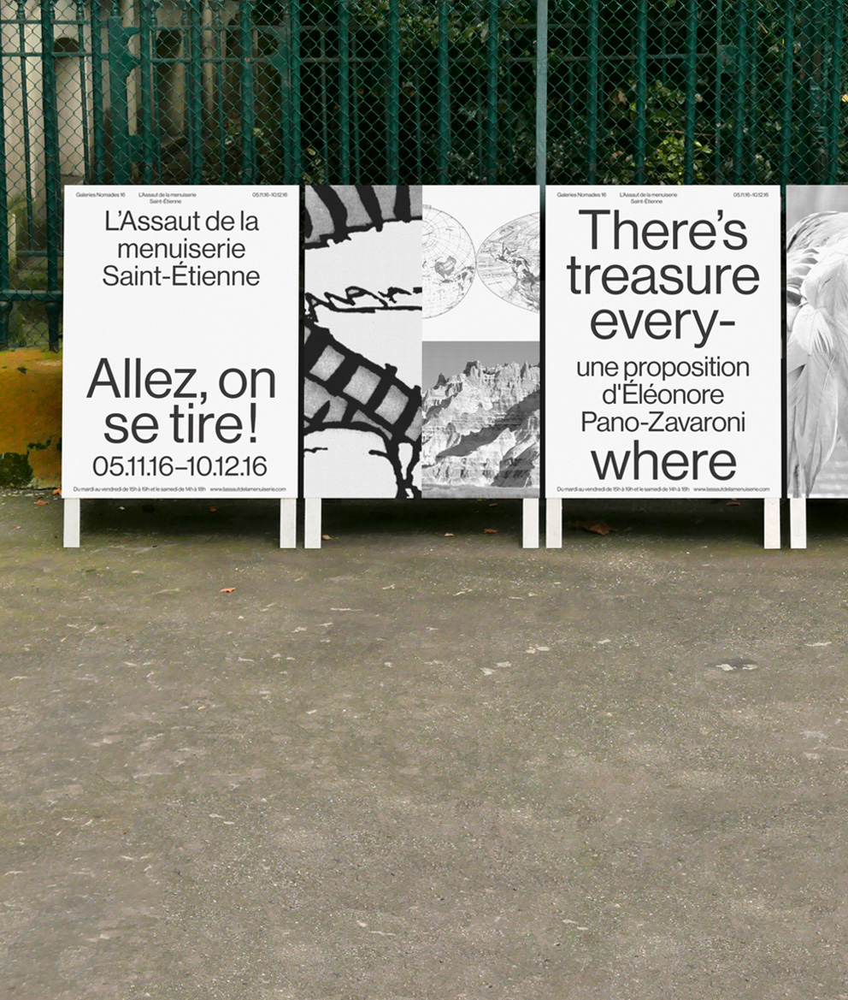
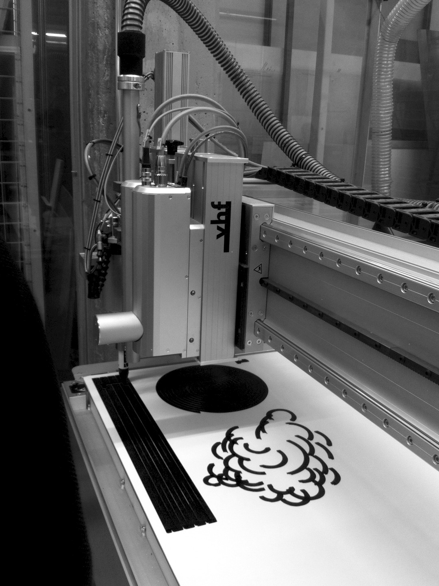
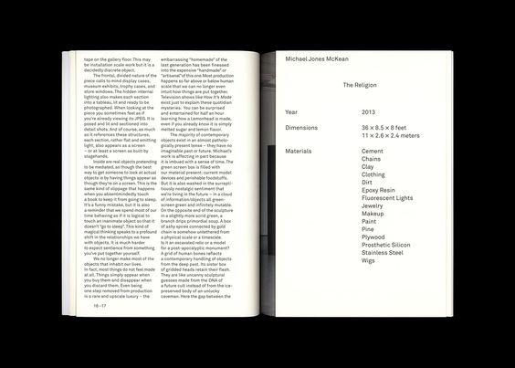
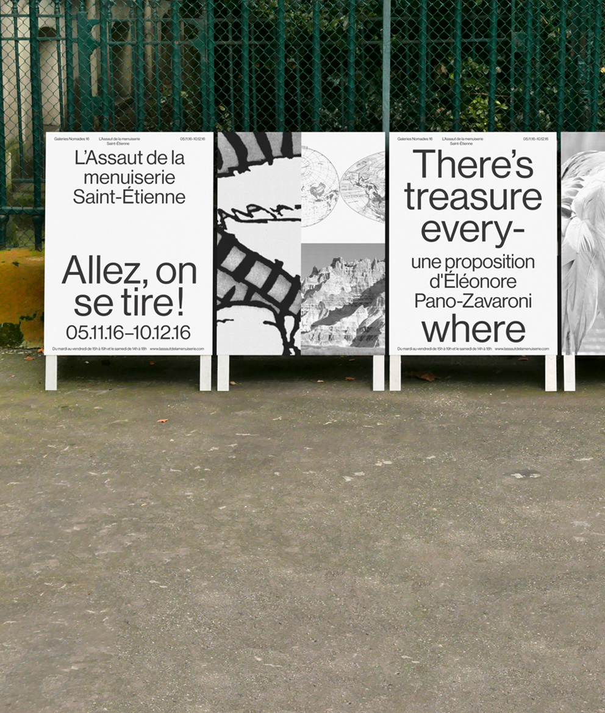
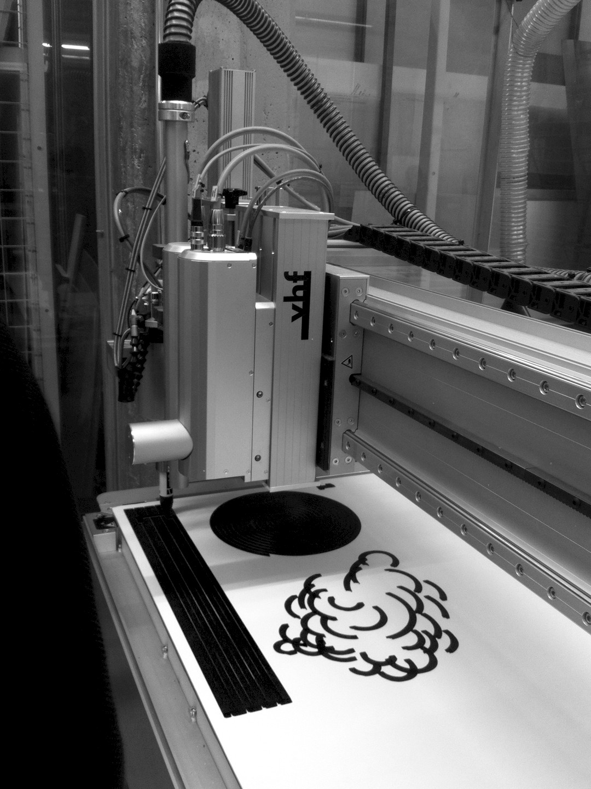
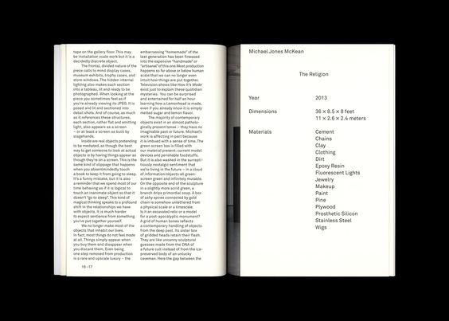

The structure includes the world’s first multi-storey post-tensioned timber frame, resting on a conventional masonry and insitu concrete plinth.
03.11.17
18.11.17
Information
Exposure is the annual graduate exhibition for the College of Creative Arts at Massey University. As one of the College’s signature events, Exposure proudly showcases the work of emerging young artists and designers as they celebrate their achievements and embark on the next step in their creative journey. Each year the exhibition’s identity is refreshed to reflect the new cohort of graduating students. representing the wide range of students and disciplines.Our approach was to focus on the student journey. The driving idea behind our concept was ‘good to great’, drawing on the student's transition from a promising young artist or designer through to a talented in-demand graduate. This transition was expressed and activated through a dynamic visual identity and typographic system.
Upcoming Events
Exposure Graduate Exhibition
November 3rd – November 19th,
10:00am – 4:00pm daily
College of Creative Arts - Massey University, Te Ara Hihiko, Tasman Street, Wellington
Opening Night
6:00pm–9:00pm, November 3rd
College of Creative Arts - Massey University, Te Ara Hihiko, Tasman Street, Wellington
Exposure Massey Fashion Show
8:00pm–9:00pm, November 7th
College of Creative Arts - Massey University, Te Ara Hihiko, Tasman Street, Wellington
Concession : $35.00
General Admission: $45.00
Industry Night
6:00pm–9:00pm, November 11th
College of Creative Arts - Massey University, Te Ara Hihiko, Tasman Street, Wellington
Location/Date: Wellington Campus
10:00am – 4:00pm
College of Creative Arts - Massey University, Block 10 & 12
Te Whare Pukaka, Mount Cook, Wellington 6021
Past Graduates
Undergraduate Programmes
Bachelor of Design(Hons)
Visual Communications
Fashion
Photography
Textile
Spatial
Industrial Design
Bachelor of Creative Media Production
1
Lucilla Gray
Hyper-Floralis, (Fashion)
2
Joshua Lewis
Song Sting Swarm, (Spatial)
3
Jasmine Wiltshier
Locating Oblivion, (Photography)
4
Fraser Callaway, Oliver Ward
Co—nnection, (Visual Communications)
5
Tyler Jackson,
No title, (Fine Arts)
6
Elise Brimer,
Jim, (Textile)
7
Glenn Catchpole,
The Strap Chair, (Industrial)